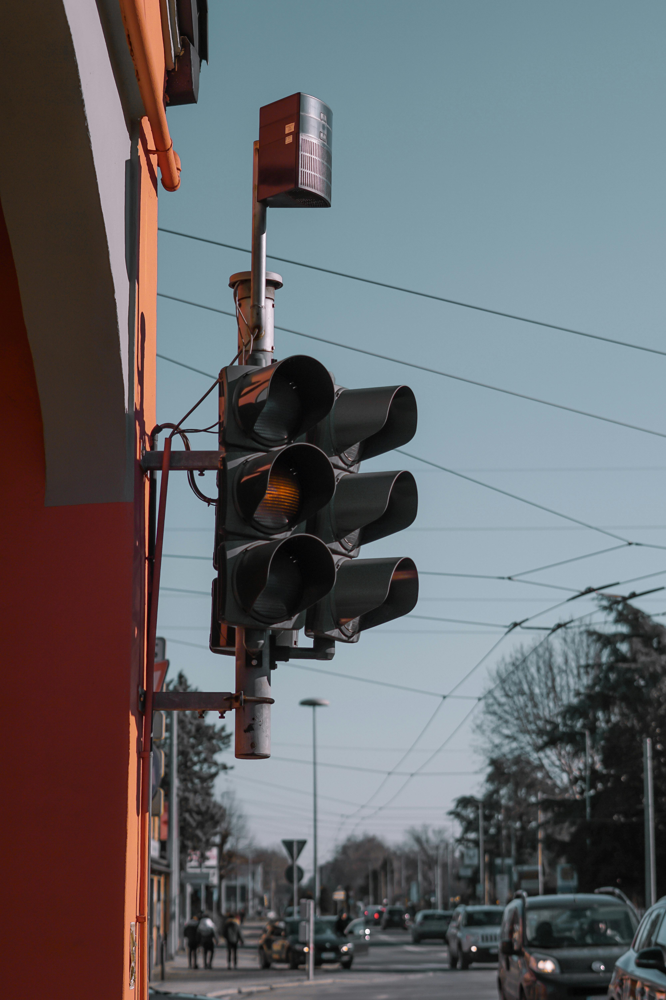

INVESTIGACION
¿Tipos de semaforos?
- SEMÁFORO PEATONAL
- LOS SEMAFOROS INTELIGENTES
- SEMÁFORO CON CÁMARA
- SEMAFORO CON AMARILLO INTERMITENTE
- SEMÁFORO DE CARRIL
LOS SEMAFOROS
Búsqueda de información El semáforo es una de las señales que regulan la circulación. Son especialmente importantes en zonas con una alta densidad de tráfico en las que no son igual de efectivas, y existen varios tipos de semáforos Mediante los semáforos la información se transmite por un sistema de colores: rojo, verde y amarillo. Cuando el semáforo está en rojo, se prohíbe el movimiento a vehículos o viandantes, cuando está verde, se permite y cuando esta en amarillo hay que ir lento. Esto es muy general, pues hay tipos de semáforos que solo usan el color ámbar o que usan líneas blancas. Así es, existen diferentes tipos de semáforos en nuestras carreteras. Los hay para distintos vehículos y para peatones, porque recordamos que los viandantes también son usuarios de las vías públicas y por lo tanto también deben respetar las normas y las señales en las intersecciones. Vamos a ver a continuación los diferentes tipos que se pueden encontrar en las carreteras españolas y qué significa cada uno.
